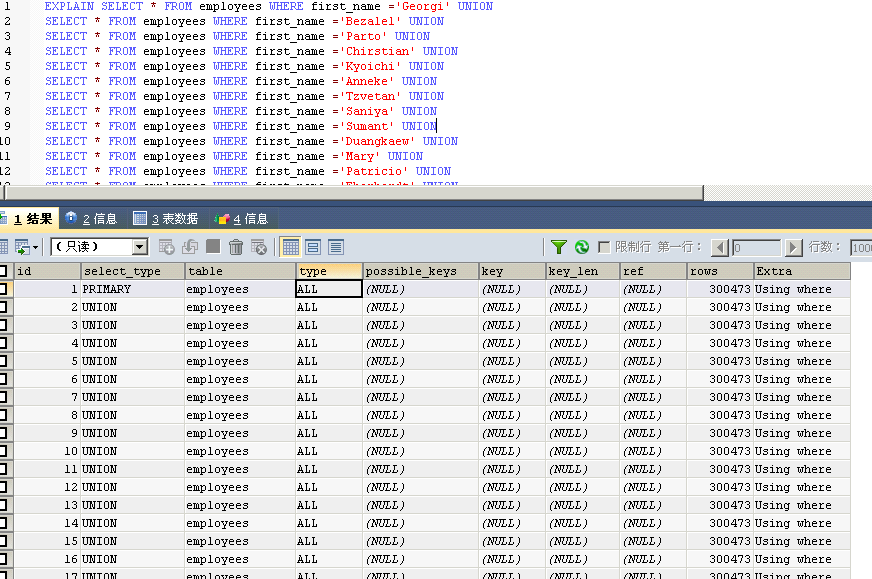

explain mysql测试合并索引
建立索引:
CREATE INDEX emplyees_firstname
ON employees (first_name);
CREATE INDEX emplyees_lastname
ON employees (last_name);
a=1 or b=2 情况下：
EXPLAIN
SELECT
emp_no,
birth_date,
first_name,
last_name,
gender hire_date
FROM
employees
WHERE first_name = 'Georgi'
OR last_name = 'Simmel' ;
| id | select_type | table | type | possible_keys | key | key_len | ref | rows | filtered | Extra |
|---|---|---|---|---|---|---|---|---|---|---|
| 1 | SIMPLE | employees | index_merge | emplyees_firstname,last_name | emplyees_firstname,last_name | 16,18 | 420 | 100.00 | Using union(emplyees_firstname,last_name); Using where |
EXPLAIN EXTENDED
SELECT
emp_no,
birth_date,
first_name,
last_name,
gender hire_date
FROM
employees
WHERE first_name ＝ 'Georgi'
UNION
ALL
SELECT
emp_no,
birth_date,
first_name,
last_name,
gender hire_date
FROM
employees
WHERE last_name = 'Simmel' ;
| id | select_type | table | type | possible_keys | key | key_len | ref | rows | filtered | Extra |
|---|---|---|---|---|---|---|---|---|---|---|
| 1 | PRIMARY | employees | ref | emplyees_firstname | emplyees_firstname | 16 | const | 253 | 100.00 | Using where |
| 2 | UNION | employees | ref | last_name | last_name | 18 | const | 167 | 100.00 | Using where |
30W数据:
90W数据
SELECT
emp_no,
birth_date,
first_name,
last_name,
gender hire_date
FROM
employees
WHERE first_name IN (
'Georgi',
'Bezalel',
'Parto',
'Chirstian',
'Kyoichi',
'Anneke',
'Tzvetan',
'Saniya',
'Sumant',
'Duangkaew',
'Mary',
'Patricio',
'Eberhardt',
'Berni',
'Guoxiang',
'Kazuhito',
'Cristinel',
'Kazuhide',
'Lillian',
'Mayuko',
'Ramzi',
'Shahaf',
'Bojan',
'Suzette',
'Prasadram',
'Yongqiao',
'Divier',
'Domenick',
'Otmar',
'Elvis',
'Karsten',
'Jeong',
'Arif',
'Bader',
'Alain',
'Adamantios',
'Pradeep',
'Huan',
'Alejandro',
'Weiyi',
'Uri',
'Magy',
'Yishay',
'Mingsen',
'Moss',
'Lucien',
'Zvonko',
'Florian',
'Basil',
'Yinghua',
'Hidefumi',
'Heping',
'Sanjiv',
'Mayumi',
'Georgy',
'Brendon',
'Ebbe',
'Berhard',
'Breannda',
'Tse',
'Anoosh',
'Gino',
'Udi',
'Satosi',
'Kwee',
'Claudi',
'Charlene',
'Margareta',
'Reuven',
'Hisao',
'Hironoby',
'Shir',
'Mokhtar',
'Gao',
'Erez',
'Mona',
'Danel',
'Kshitij',
'Premal',
'Zhongwei',
'Parviz',
'Vishv',
'Tuval',
'Kenroku',
'Somnath',
'Xinglin',
'Jungsoon',
'Sudharsan',
'Kendra',
'Amabile',
'Valdiodio',
'Sailaja',
'Arumugam',
'Hilari',
'Jayson',
'Remzi',
'Sreekrishna',
'Valter',
'Hironobu',
'Perla'
)
无索引时扫描表１００次
